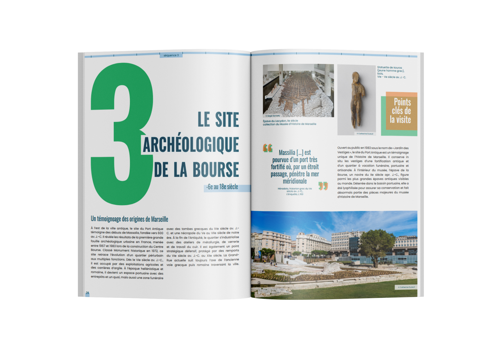
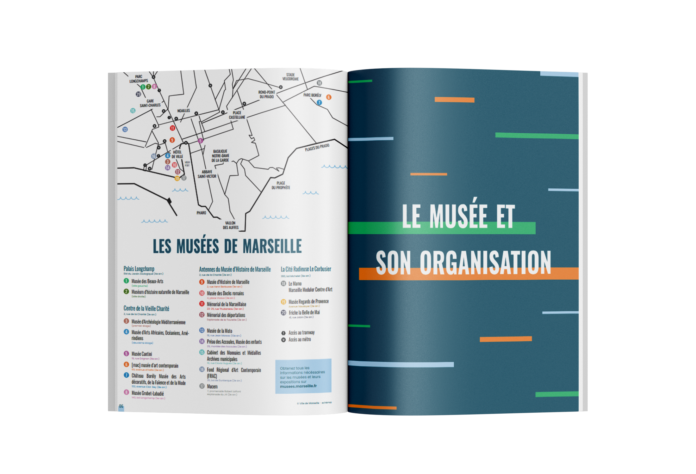
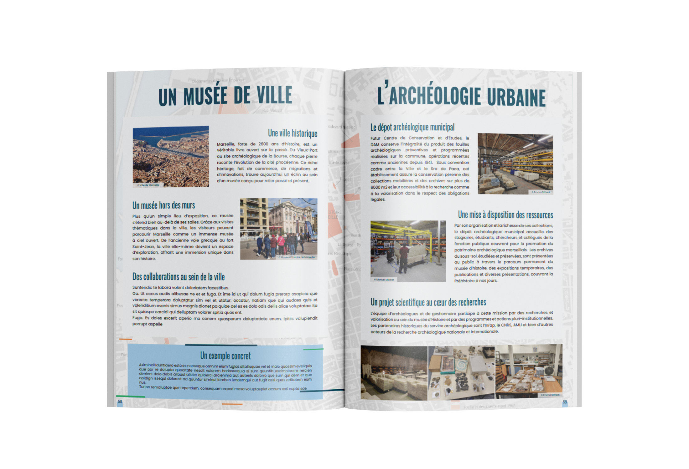

Production
Lors de mon alternance au sein de l’entreprise 3B PRO, je me suis vu confier la réalisation de différents supports print pour la communication externe de l’entreprise. N’ayant pas une charte graphique très dense à disposition, j’ai essayé de créer des raccords visuels entre mes productions pour donner de la cohérence graphique à la globalité.
Flyers de prospection Publicité par l’image (PPI) :
J’ai commencé par produire un premier flyer pour la prospection pour la branche principale de l’entreprise. J’ai commencé par créer la première et quatrième de couverture, pour produire un visuel graphique cohérent comportant toutes les informations nécessaires. Puis j’ai créé une grille comportant tous les articles demandés.

Flyer de prospection WPC :
Par la suite, j’ai adapté ce premier flyer dans la charte graphique de la branche secondaire de l’entreprise. J’ai également proposé une deuxième version, pour laisser le choix de la mise en page.

Catalogues des fournisseurs :
Pour représenter au mieux l’entreprise, j’ai créé des nouvelles couvertures pour les catalogues de nos principaux fournisseurs. Cela permet aux commerciaux de fournir des catalogues personnalisés aux clients. J’ai d’abord créé une version définitive pour un des catalogues, puis je l’ai décliné pour chaque fournisseur.



Catalogues des fournisseurs :
J’ai également dû remettre à jour l’ancien catalogue, en modifiant les références, les prix, les photos d’illustrations et les descriptions. J’ai produit une nouvelle couverture pour ce magazine, mais après les retours de la direction, des ajustements ont étaient nécéssaires. J’ai dû faire preuve de flexibilité pour répondre aux demandes de la direction.
 Cependant, l’entièreté du catalogue avait été produite sur Photoshop, avec un fichier par page. J’ai donc dû m’adapter à ce fonctionnement, et reprendre en main un projet commencé par une autre personne.
Cependant, l’entièreté du catalogue avait été produite sur Photoshop, avec un fichier par page. J’ai donc dû m’adapter à ce fonctionnement, et reprendre en main un projet commencé par une autre personne.
Version 1 - page de couverture
Version 2 - page de couverture
Version 3 - page de couverture
Panneau publicitaire :
Enfin, il m’a été demandé de produire un nouveau panneau publicitaire. Situé à l’entrée de la société, et donnant directement sur la route, ce panneau a pour but d’attirer de nouveaux clients. J’ai reçu un brief détaillé des attentes, et j’ai produit plusieurs itérations avant d’obtenir le résultat final.
Mes difficultés générales :
Ma principale difficulté a été de produire des visuels avec une cohérence graphique, alors que je n’avais que les couleurs de l’entreprise en tant qu’identité visuelle. J'ai dû faire preuve de créativité, et créer des éléments visuels réccurents pour créer des raccords visuels entre mes différentes productions. J’ai également dû m’adapter à des demandes de dernière minute, et faire preuve de flexibilité pour répondre aux attentes de la direction.